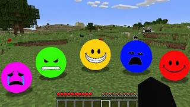

Hello its me its Verity, ask me anything!
Welcome to the Verity's page! Here you can find all the different varieties of Verity and pick your favorite!
My favorite Verity is Curiosity because it is interesting and always wants to learn new things!

Click here to learn more about Verity: Google